Задать вопрос
Задать вопрос

Найти
Теоретические сведения
Термодинамическая система – это совокупность макроскопических тел, которые взаимодействуют и обмениваются энергией как между собой, так и с другими телами. Состояние термодинамической системы задается термодинамическими параметрами – совокупностью физических величин, характеризующих свойства термодинамической системы. Любое изменение в термодинамической системе, связанное с изменением хотя бы одного из термодинамических параметров, называется термодинамическим процессом. Макроскопическая система находится в термодинамическом равновесии, если ее состояние с течением времени не меняется.
Квазистатическим, или равновесным, процессом в термодинамике называют бесконечно медленный переход термодинамической системы из одного равновесного состояния в другое, при котором в любой момент времени физическое состояние системы бесконечно мало отличается от равновесного. Равновесие в системе при квазистатическом процессе устанавливается во много раз быстрее, чем происходит изменение физических параметров системы. Всякий квазистатический процесс является обратимым процессом. Термин «квазистатический процесс» был предложен в 1909 г. немецким математиком К. Каратеодори.
Согласно первому началу термодинамики: теплота, сообщаемая термодинамической системе, расходуется на изменение ее внутренней энергии и на совершение системой работы против внешних сил. В дифференциальной форме первое начало термодинамики имеет вид
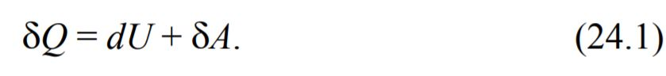
Анализ различных термодинамических процессов свидетельствует о том, что первый закон термодинамики не указывает направление протекания термодинамического процесса. Действительно, самопроизвольный процесс передачи энергии от холодного тела горячему не противоречит первому закону термодинамики, если только уменьшение внутренней энергии первого тела равно энергии, полученной вторым телом. Однако в природе такой процесс не наблюдается. Основываясь на первом законе термодинамики, можно было бы попытаться построить периодически действующий двигатель, совершающий работу за счет непрерывного охлаждения одного и того же источника теплоты, например за счет внутренней энергии океанов. Однако такой процесс, хотя он и удовлетворяет первому началу термодинамики, реализовать невозможно, что равноценно утверждению о невозможности построения вечного двигателя второго рода. Неоднократные попытки создания такого двигателя привели к открытию второго начала термодинамики. Его содержание является обобщением огромного экспериментального материала и описывает направление протекания процессов в термодинамической системе. Существует ряд эквивалентных формулировок второго начала термодинамики:
1. Невозможен процесс, единственным результатом которого является передача энергии в форме теплоты от менее нагретого тела более нагретому (формулировка Клаузиуса, 1850 г.).
2. Невозможен процесс, единственным результатом которого является превращение всей теплоты, полученной от нагревателя, в эквивалентную работу (формулировка Кельвина, 1851 г.).
Второе начало термодинамики указывает на неравноценность двух форм передачи энергии − работы и теплоты. Этот закон учитывает тот факт, что процесс перехода энергии упорядоченного движения тела как целого (механической энергии) в энергию неупорядоченного движения его частиц (тепловую энергию) необратим. Например, механическая энергия при трении переходит в теплоту без каких-либо дополнительных (компенсирующих) процессов. Переход же энергии неупорядоченного движения частиц (внутренней энергии) в работу возможен лишь при условии, что он сопровождается каким-либо дополнительным процессом.
Рассмотрим квазистатический процесс, протекающий в идеальном газе. Запишем первое начало термодинамики в дифференциальной форме для этого процесса:
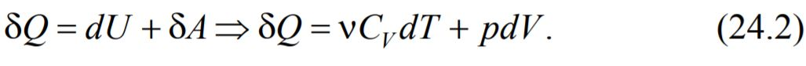
Правая часть этого равенства не является полным дифференциалом, следовательно, количество теплоты Q не является функцией состояния. Разделив (24.2) на температуру T, получим
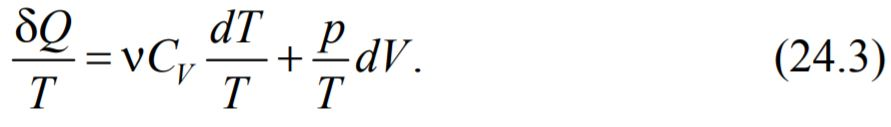
С помощью уравнения Клапейрона – Менделеева уравнение (24.3) можно преобразовать к виду
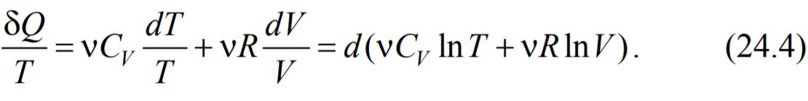
Правая часть равенства (24.4) является полным дифференциалом. Следовательно, левая часть, которая называется приведенным количеством теплоты, также является полным дифференциалом. Функция состояния, полный дифференциал которой равен δQ / T, называется энтропией и обозначается S:
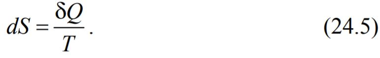
В термодинамике понятие энтропии было введено Р. Клаузиусом в 1865 г. Энтропия - это термодинамическая функция, характеризующая меру необратимой диссипации энергии в ней. Энтропия обладает следующими свойствами:
– энтропия − величина аддитивная: энтропия системы равна сумме энтропии всех тел, входящих в эту систему;
– энтропия изолированной системы не уменьшается, она либо возрастает, либо остается постоянной. Если в изолированной системе происходят обратимые процессы, то ее энтропия остается неизменной. Если в изолированной системе происходят необратимые процессы, то ее энтропия возрастает.
Принцип возрастания энтропии замкнутых (изолированных) систем представляет собой еще одну формулировку второго начала термодинамики. Величина возрастания энтропии в замкнутой системе служит мерой направленности процессов, протекающих в этой системе (возможны лишь такие процессы, которые ведут к увеличению энтропии изолированной системы). Математически это можно записать с помощью неравенства
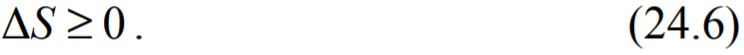
Чтобы определить изменение энтропии при квазистатическом переходе термодинамической системы из одного равновесного состояния в другое, необходимо проинтегрировать выражение (24.5):
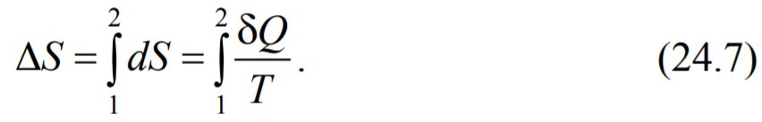
Рассмотрим процесс теплообмена между двумя телами: стаканом и цилиндром. Изменения энтропии стакана ΔSс и цилиндра ΔSц в соответствии с формулой (24.7) равны
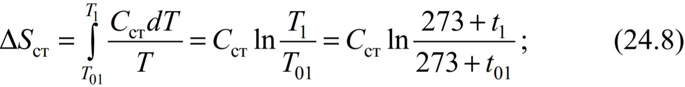
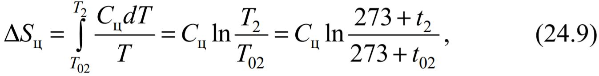
где Cст – теплоемкость стакана; Cц – теплоемкость цилиндра; t01 и t02, t1 и t2 – температуры стакана и цилиндра в начальный и в некоторый момент времени соответственно.
Изменение энтропии системы стакан – цилиндр равно:
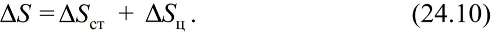
Для вычисления ΔS необходимо определить теплоемкости стакана и цилиндра, их начальные и конечные температуры.
Для измерения теплоемкости Cст стакана сначала необходимо нагреть стакан, при этом цилиндр должен быть вынут из стакана во избежание нагрева. Затем цилиндр вставляют в нагретый стакан и закрывают теплоизолирующей крышкой. Между цилиндром и стаканом будет происходить теплообмен, пока их температуры не станут одинаковы.
При нагревании стакана количество теплоты Qнагр, которое выделяет нагреватель, идет на нагревание стакана и частично рассеивается в воздухе. В начале процесса нагревания температура стакана в течение некоторого промежутка времени Δτ растет по линейному закону (значения функции изменяются линейно в зависимости от значений аргумента). Пренебрегая потерями теплоты на этом интервале, можно записать:
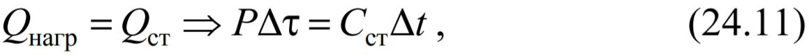
где Qcт – количество теплоты, затраченное на нагревание стакана; Δt – изменение температуры стакана при его нагревании за время Δτ. Интервал времени нагревания Δτ следует выбрать небольшим (2–3 мин).
Из выражения (24.11) можно получить формулу для определения теплоемкости Cст стакана:
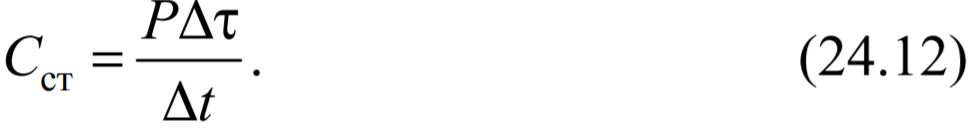
Тепловой баланс - это сопоставление прихода и расхода (полезно использованной и потерянной) теплоты в различных тепловых процессах. При теплообмене стакан с цилиндром находится в термостате (системе, обладающей столь большой теплоёмкостью, что подводимое к ней тепло не меняет её температуру.), поэтому уравнение теплового баланса для этого процесса будет иметь вид:
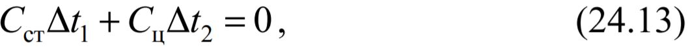
где Δt1 и Δt2 – изменения температуры стакана и цилиндра за один и тот же промежуток времени от начала теплообмена (тепловые потери на нагревания воздуха в термостате не учитываем). Отсюда находим теплоемкость цилиндра:
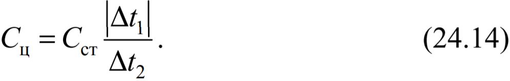